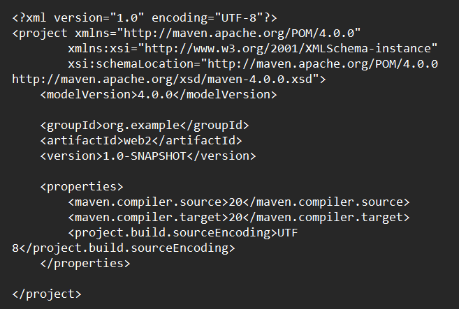

Semana 09: Desarrollo Backend - Arquitectura y Principios
Exploramos arquitecturas web, servidores, gestión de dependencias y configuración de entornos con Java/Jakarta EE.
Arquitecturas de Aplicaciones Web
Arquitectura Cliente-Servidor:
- MPA (Multi-Page Applications): Web clásica con múltiples páginas HTML, cada una con sus propios recursos (CSS, JS). Se conectan mediante enlaces y rutas accesibles.
- SPA (Single-Page Applications): Solo una página HTML que carga todos los recursos al inicio. Usa JavaScript para navegar entre componentes y solicita solo datos al servidor.
- Híbridas: Combinan características de SPA y MPA, como componentes dinámicos pero con enfoque multipágina (ej. con Next.js).
Arquitectura Hexagonal (Puertos y Adaptadores):
- Separa la aplicación en capas con responsabilidades específicas (Dominio, Aplicación, Infraestructura).
- Usa puertos (puntos de entrada/salida) y adaptadores (implementaciones concretas).
- Tipos: Primarios (inician comunicación) y Secundarios (responden a solicitudes).
Diagrama de la arquitectura hexagonal con puertos y adaptadores
Servidores Web y Hosting
Servidores Web:
- Software: Apache (31.4%), Nginx (34.1%), Cloudflare (21.6%), LiteSpeed (12.4%), Tomcat (para Java).
- Configuración:
- Apache: Archivo httpd.conf (DocumentRoot, Listen, ServerName, etc.)
- Tomcat: Archivo server.xml (puertos, hosts, contextos)
Cuota de mercado de los principales servidores web
Hosting:
- Tipos: Compartido, VPS, Dedicado, Administrado, Cloud.
- Cloud Hosting: Escalable, pago por uso (Azure 41%, AWS 47%, Google Cloud 17%).
Principales proveedores de servicios en la nube
Funcionamiento del Server Side
Proceso:
- Navegador envía solicitud HTTP al servidor.
- Servidor interpreta la solicitud.
- Ejecuta código backend (PHP, Node.js, Java, etc.).
- Consulta bases de datos si es necesario.
- Genera respuesta (HTML, JSON, XML).
- Envía respuesta al cliente.
Flujo de procesamiento en el lado del servidor
Ecosistema Server Side
Lenguajes y Frameworks:
- Java: Jakarta EE, Spring, Dropwizard
- PHP: Laravel, Symfony, CodeIgniter
- Python: Django, Flask, Pyramid
- JavaScript: Node.js, Express, Nest
- .NET: ASP.NET, Xamarin
Principales frameworks para desarrollo backend
Apache Tomcat
Estructura de Directorios:
- bin: Ejecutables y scripts
- conf: Archivos de configuración (server.xml)
- webapps: Aplicaciones web desplegadas
- logs: Registros del servidor
Estructura de directorios en Apache Tomcat
Archivo server.xml:
Configuración en server.xml
Gestión de Dependencias con Maven
Ciclo de vida:
- compile → test → package → install → deploy
Fases del ciclo de vida en Maven
Archivo pom.xml:

Estructura básica de un archivo pom.xml